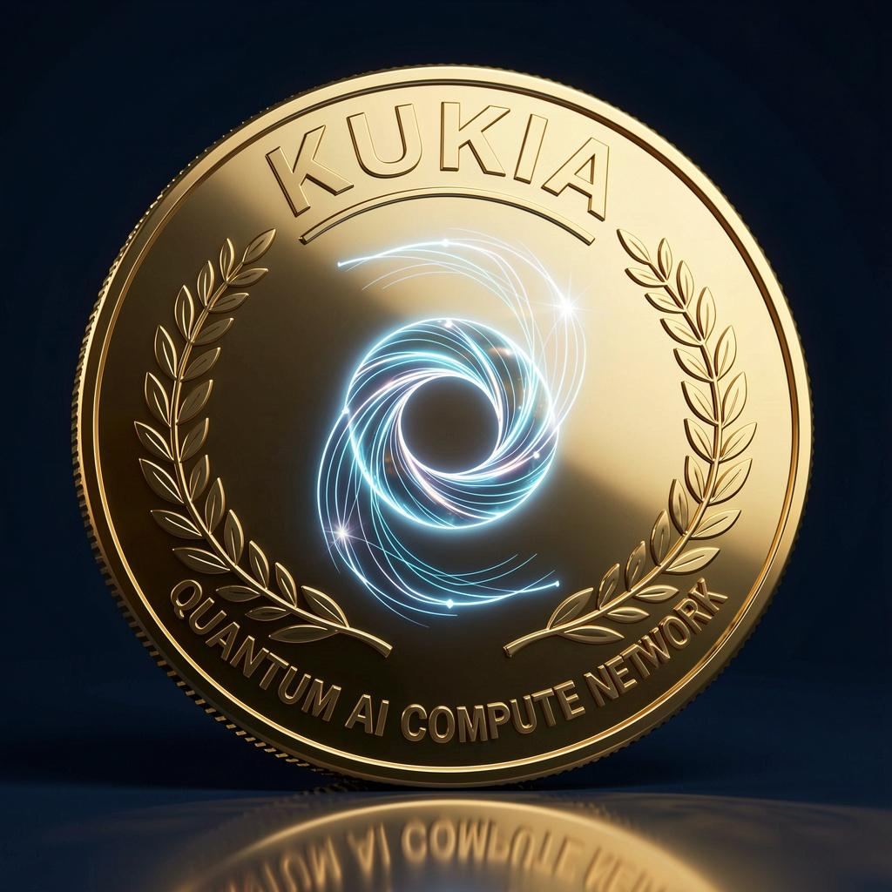
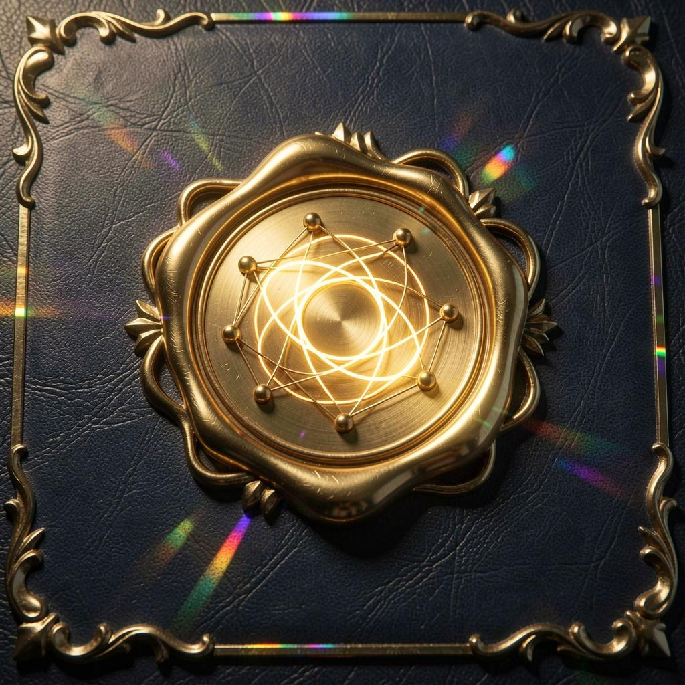

Registra tu tarjeta grafica. Cualquier GPU de 8GB+ vale. Nunca compras hardware: usas el que ya tienes.
Ejecuta tareas reales: inferencia, imagen, video, simulaciones. Nada de mineria tonta que solo quema energia.
Cada resultado se recalcula bit a bit en el Core. Si no coincide, no se paga: hay penalizacion en KIA, perdida de reputacion y unos minutos sin trabajar.
Cada trabajo verificado acuna moneda. 100 millones maximo, hasta 2150. Sin inflacion vacia.
¿Necesitas generar imágenes, video o inferencia de IA? La red KUKIA lo ejecuta en GPUs reales y cada resultado llega verificado. Sin nube cara, sin humo.
Generación fotorrealista con modelos de última generación, verificada por la red.
Reparte tu carga entre decenas de GPUs. Pagas solo el trabajo entregado y verificado.
Cálculo científico y simulaciones con resultado reproducible y auditable.
Si el resultado no verifica, no pagas. Así de simple. El ledger público lo demuestra.
Hoy la red ejecuta y verifica trabajo de sus propios nodos. El pago de clientes externos (depósito y facturación) es la fase 3: hasta entonces no hay precio de KIA ni forma de comprarlo. Cuando lo haya, se anunciará aquí y solo por demanda real.
Conectando con la red…
Cifras del ledger real, refrescadas cada minuto mientras el minero está encendido. Si se apaga, la web se queda con la última instantánea y lo avisa. El ledger público manda.
Gráficas con datos reales del ledger, una muestra por minuto. Si el minero se apaga, las líneas se quedan planas: eso también es información. Las de potencia y latencia salen de lo que cada GPU tardó de verdad en cada tarea, no de una media declarada.
El histórico lo guarda el relé público, no el ledger. La gráfica arranca en cuanto hay dos muestras (≈2 min).
KIA sale a precio segun demanda real cuando la red tenga nodos, trabajo y clientes de verdad. Ni antes, ni despues. Mes de prueba: 4-6 semanas de validacion.
Prestas tu GPU y ganas KIA por cada tarea completada y verificada. Trabajo real de IA, no hashes vacios.
Quien necesita imagenes, videos o simulaciones paga en KIA por el servicio de la red.
Enviar KIA no cobra comision: lo que envias es lo que llega. Nada de quema anunciada que el codigo no haga.
Escalonada hasta 2150 con dificultad ajustada al numero de nodos activos de la red.
Minero público con la GPU medida de verdad, verificación redundante de las tareas caras, anclas en Bitcoin de cada sello y wallet que mueve saldo. 113.000+ tareas verificadas en el ledger.
Reputación, tiers por VRAM y potencia demostrada: la prima se paga con trabajo verificado, no con lo que declara el minero.
Minado abierto: cualquiera descarga el nodo, cobra por tarea verificada y recibe la prima de su GPU si la demuestra.
Primeros clientes de cómputo con depósito. Aquí sale el precio, solo por demanda. Todavía no está: no hay mercado ni precio.
pip install fastapi uvicorn pydantic requests torchcd worker && python kukia_worker.py tu_nombreNo hay precio todavia. Sale al mercado segun demanda real cuando la red funcione de verdad, con nodos y clientes.
Depende de tu GPU y del trabajo disponible. En la red de prueba: 10 KIA base por cada tarea verificada correctamente.
No. Usas la grafica que ya tienes. Cualquier NVIDIA de 8GB en adelante sirve para empezar.
Verificacion bit a bit, trabajo UTIL (IA real, no hashes vacios), emision honesta hasta 2150 y precio que nace de demanda real, no de especulacion.
Estamos en fase de pruebas (4-6 semanas). Registrate en la lista y te avisamos cuando abramos los primeros nodos.
No. El registro es solo la lista de espera. Cuando instales el nodo, tu billetera se crea con tu contrasena + 20 palabras unicas de recuperacion: una direccion KUK unica con criptografia Ed25519 real. Escribelas en papel: con ambas recuperas la MISMA billetera en cualquier equipo. Tu clave nunca sale de tu PC.
Fase de pruebas. Codigo 100% abierto: GitHub + ZIP descargable. Sin auditoria de seguridad independiente todavia (declarado). Recompensas = parametros de prueba con calendario hasta 13-04-2150, no ganancias garantizadas. Precio: no existe aun. Rentabilidad: no calculable sin precio/demanda/consumo medido. Leer whitepaper completo.
Comprobado con pruebas reproducibles (auditoria interna, 19-10-2026):
/ledger/integridad.La red KUKIA protege a quien mina y a quien compra computo:
1. Descarga el ZIP y descomprimelo.
2. Abre los archivos .py con cualquier editor de texto y leelos (son cortos: 40-90 lineas cada uno).
3. Busca llamadas de red: solo veras peticiones al Core de KUKIA (tu propia maquina o la que configures).
4. Busca permisos: no hay comandos de administrador ni accesos fuera de su carpeta.
5. Si algo no te cuadra, no lo ejecutes y reportalo. Preferimos una critica honesta a un usuario enganado.
Se de los primeros en conectar tu GPU cuando la red abra. Te avisaremos al lanzamiento.
🔒 Tu billetera: maxima seguridad
Al instalar el nodo recibiras tu contrasena + 20 palabras unicas. Escríbelas en papel y guardalas en 2 sitios distintos. En caso de perdida del equipo, SOLO con ambas recuperas tu billetera y tus KIA en cualquier otro equipo. Sin ellas, nadie —ni siquiera nosotros— puede recuperarlas. No las guardes en fotos del movil ni en la nube sin cifrar.
Registrate con la casilla marcada y aporta los TOPS de tu grafica a la red. Los primeros nodos empiezan con reputacion y cobran cada tarea verificada.
El codigo es publico: github.com/lordkukone/kukia-node. Una estrella ayuda a que mas gente lo encuentre.
Comparte la web en tus redes con los hashtags del proyecto. Cuanta mas gente conozca KUKIA, antes nace la demanda real.
Todo el codigo esta publicado y es verificable: revisalo aqui o en GitHub. Si eres desarrollador, reporta mejoras.
